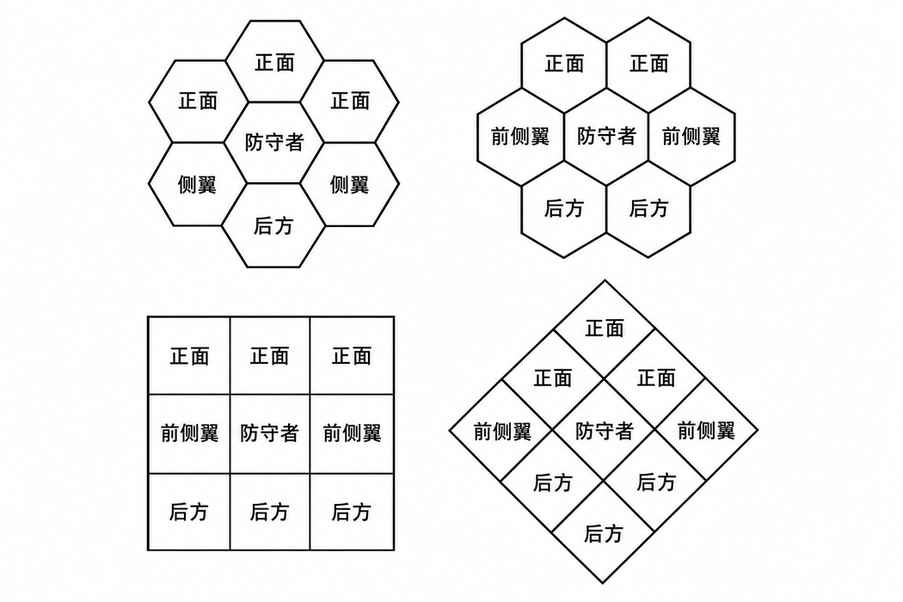

每个角色可面对的对手数 · Number of Opponents per Figure
体型与空间会限制可同时近战攻击单个角色的对手数量。若用官方 AD&D 微缩模型表示参战生物，模型本身便会显示可投入战斗的对手数量。谨慎使用其他奇幻微缩模型，因为多数并非按本游戏特定比例制作，也未遵循《怪物图鉴》的规格（甚至不一定符合 25 毫米比例）。其他情况下可按以下经验法则：
1. 若单个防守者为小型（S），在最佳条件下每轮最多可由 4 个中型（M）或 2 个大型（L）生物攻击；若空间足够，也可由 6 个小型生物攻击。 2. 若单个防守者为中型（M），最多可由 8 个小型、6 个中型或 4 个大型对手攻击。 3. 若单个防守者为大型（L），最多可由 12 个小型、8 个中型或 6 个大型生物同时攻击。
调整因素无法穷尽，因为这取决于当前的物理环境。显然，身处狭窄通道或角落的角色只能从有限方向遭受攻击。防守者与攻击者的形状同样重要：巨蛇可暴露更多身体部位供攻击；除非攻击者能飞行或从其他方向攻击巨人整个垂直表面，否则巨蛇也比巨人更容易遭到包围。任何身体修长的生物都有更多部位暴露在攻击范围内；而宽阔的生物，或必须接触对手才能使用自然身体武器的生物，可供同时攻击的位置更少——例如，究竟能有几条蟒蛇同时有效攻击一个目标？下图展示六角格与方格两种基本网格，以及多个对手围攻单个角色的方式（另见下文“侧翼与背后攻击”）。

重要：武僧的击晕／杀死能力只对活物有效。不死生物不受影响；此外，武僧徒手击中不死生物可能非常不妙，尤其当该生物会通过触碰造成伤害时——武僧碰到不死生物，效果就如同反向接触。魔像与变形怪也不受此能力影响。不过，若徒手攻击本身能够伤害怪物，仍会照常造成伤害。
上一节：近战 · Melee
下一节：战斗及其他时间敏感情境中的行动 · Actions During Combat and Similar Time-Important Situations